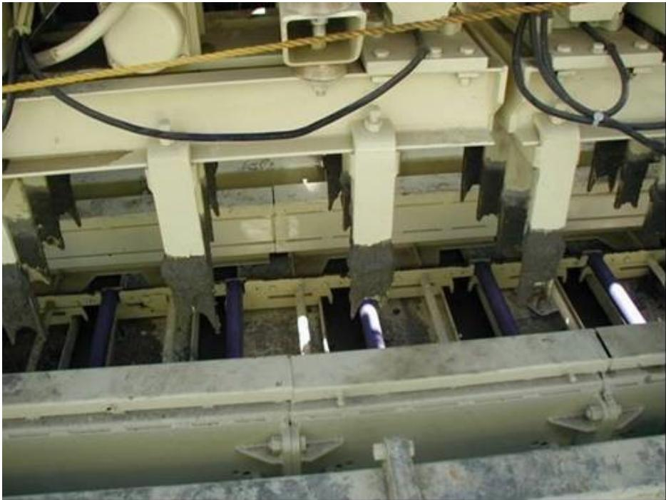
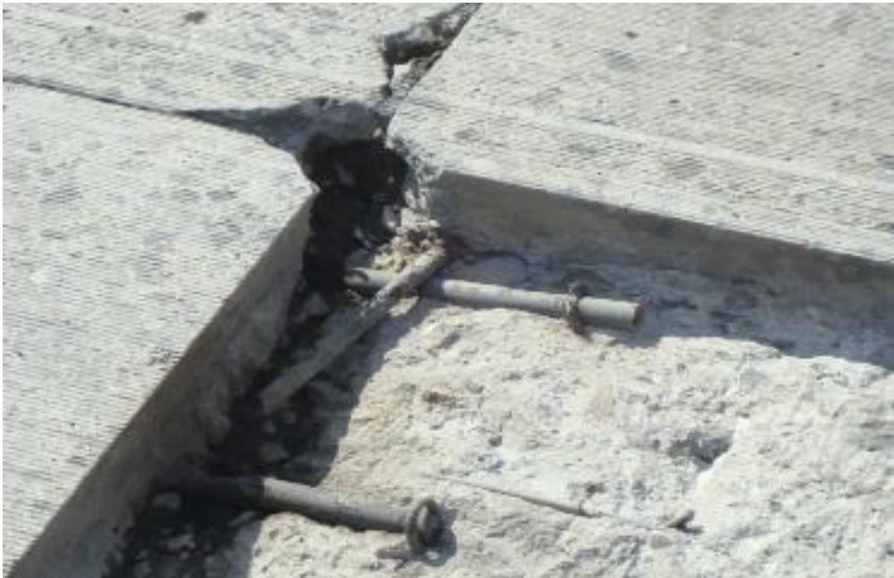
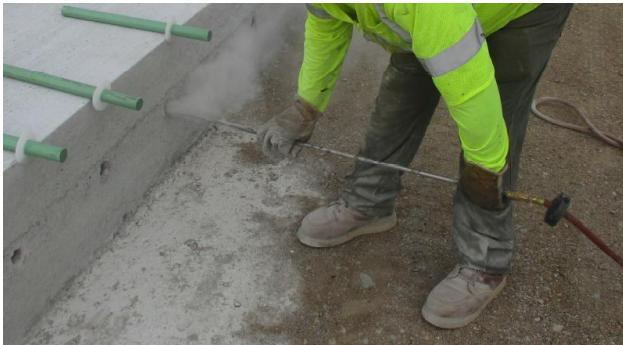
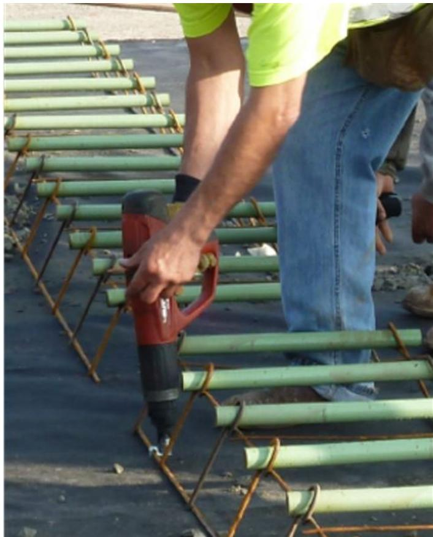
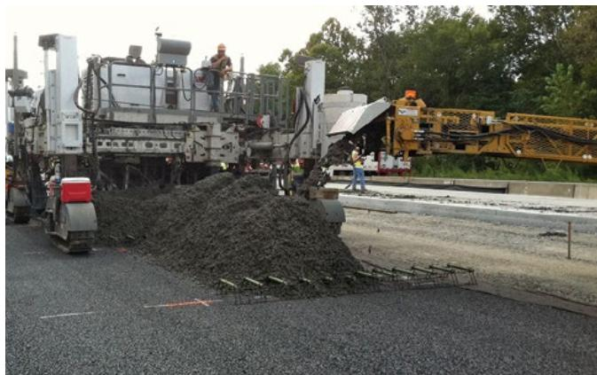
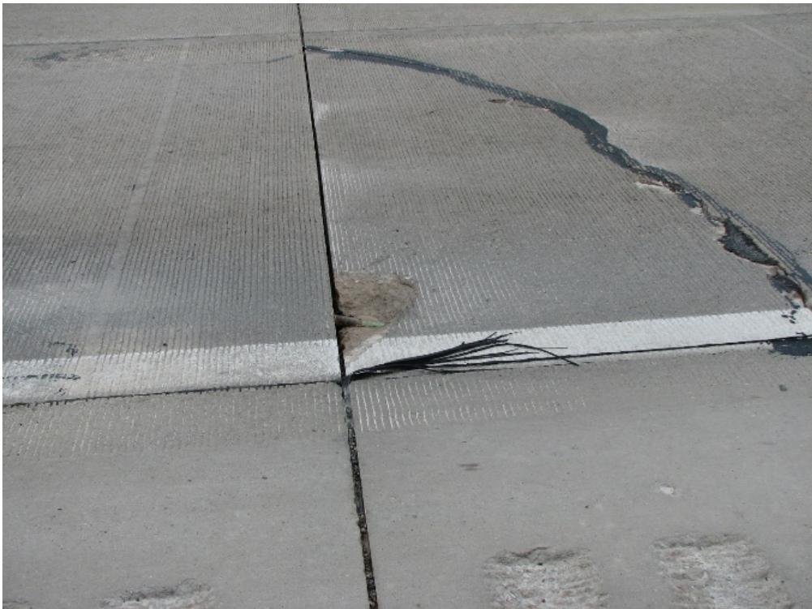
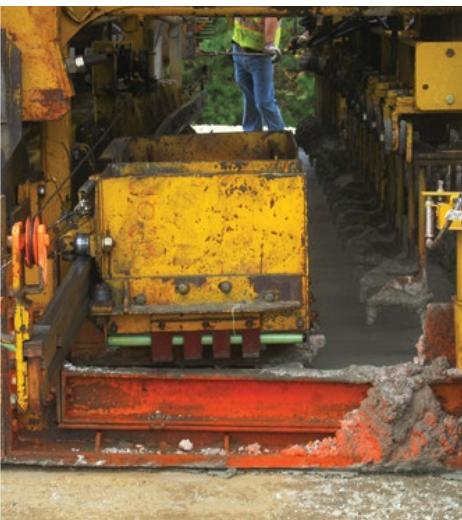
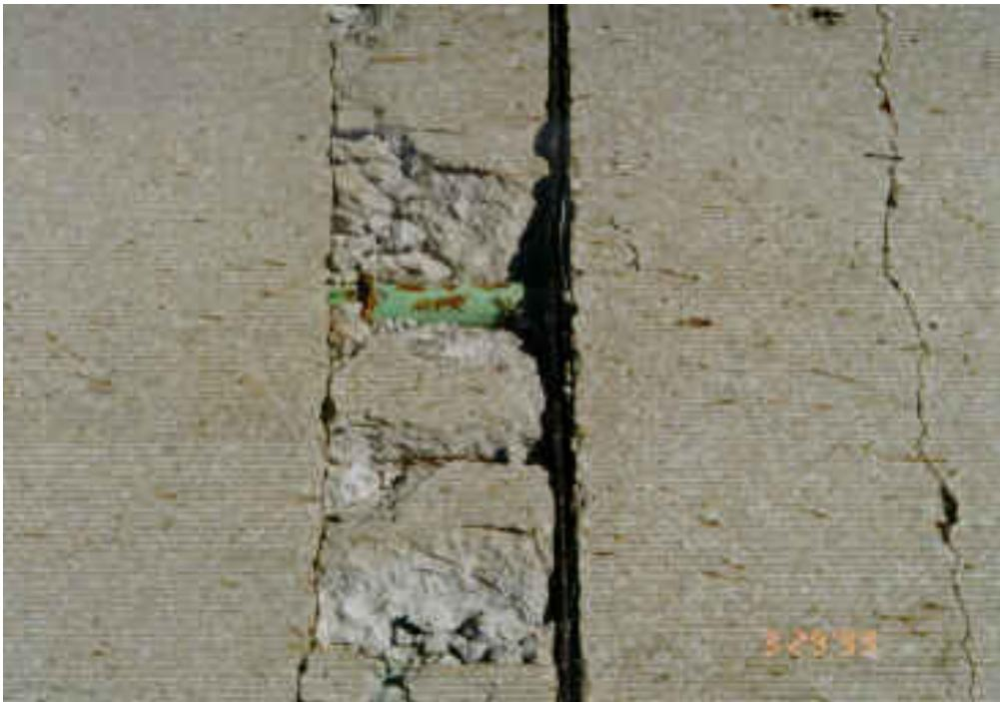
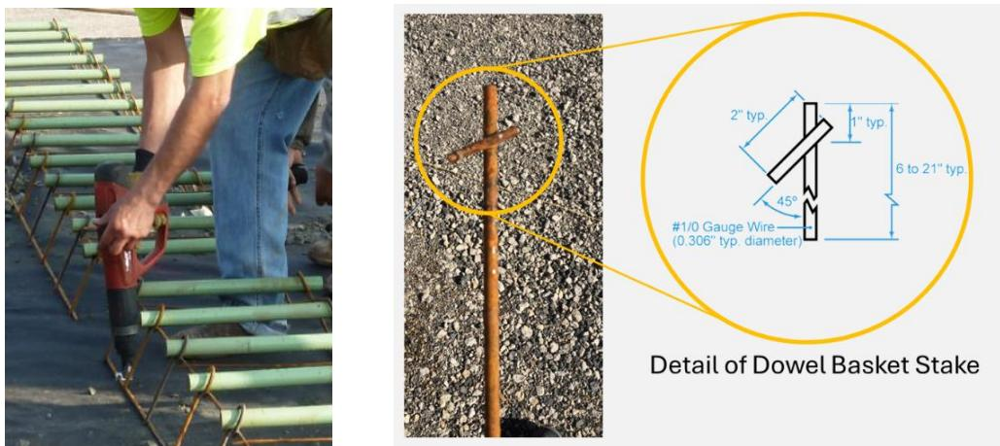

Dowel Bar Embedment and Alignment
Dowel bar embedment and alignment is a construction procedure that places smooth steel dowel bars across transverse joints of concrete pavements to restore load transfer and prevent the faulting, pumping, corner cracking and joint lock‑up that result from loss of shear continuity[1][2][3]. It is employed on heavy‑truck routes where slabs are at least 6 in. thick, using round or oval bars of minimum 1¼ in. diameter (commonly 18 in. long) embedded a minimum of 64 mm (2½ in.) on each side of the joint and positioned so that the bar extends at least 175 mm beyond the joint line with horizontal, vertical and skew tolerances of ±13 mm (≈0.5 in.)[4][5][6]. The bars are set in prefabricated baskets or chairs anchored to a prepared subbase with steel stakes or nails, fitted with plastic endcaps, coated with an approved compound, and—when installed post‑cure—grouted with FAA‑approved epoxy; alignment is subsequently verified by visual checks and nondestructive devices such as MIT‑SCAN to ensure compliance with the specified tolerances[2][5][7]
Sources (7)
Purpose and applicability
The dowel‑bar embedment and alignment procedure solves the problem of loss of load transfer across transverse joints that leads to faulting, pumping, corner cracking and joint lock‑up. Dowel bars (smooth bars), or simply dowels, are placed in concrete across transverse joints to provide vertical support and to transfer loads across joints. when dowel bars are too close to the joint corner or the ends of other dowels, the risk of cracking near the corner increases due to over restraint of slab expansion and contraction movements. a minimum dowel bar embedment length of 64 mm (2.5 in.) is needed to prevent significant faulting and maintain reasonable load transfer efficiency across a joint. When dowel bars are not properly placed causing misalignment, both horizontally and vertically, the dowel bar(s) can lock up the joint. [1][2][3][4][5][6][7]
The following figure illustrates the close-up view of the dowel bar inserter on a paving machine.

Close-up of the dowel bar inserter on a paving machine [5]The image displays the mechanical apparatus of a dowel bar inserter mounted to a concrete paver, featuring vertical guides that hold smooth steel bars in position. This device is used to place the bars centered on the joint and near mid-depth of the pavement to ensure adequate embedment for load transfer.
[1] — Ch. 3 (p. 103), Ch. 8 (pp. 241–243), Ch. 9 (pp. 271–272); [2] — Ch. 5 (pp. 223–229); [3] — Dowel Bar Length (pp. 12–21); [4] — Ch. 4 (pp. 58–76); [5] — Ch. 4 (pp. 128–224), Ch. 18 (p. 422); [6] — Ch. 8 (p. 187); [7] — Ch. 8 (pp. 171–172)
The guides agree that dowel bar embedment and alignment is appropriate when the pavement carries heavy‑truck traffic – “Dowel bars are typically used on heavy truck routes.” – and when slab thickness meets the minimum – “Dowel should not be used in pavements less than 6 in. thick.” – provided the concrete mix is well‑graded and workable – “Mixtures with well‑graded aggregate and appropriate workability produce excellent results with dowel and tiebar insertion.” – and, if automatic insertion is chosen, the equipment must function correctly – “If automatic insertion equipment is used, the mixture must be sufficiently workable and the equipment must be operating correctly.” – The method is also indicated for transverse or diagonal cracks in sound concrete – “Dowel‑bar retrofit of transverse or diagonal cracks is an alternative to FDR or slab replacement.” – and when a uniform, sufficiently thick HMA overlay can securely hold anchoring devices – “Fastening devices may hold securely in thicker sections of HMA and not hold in thinner sections.” – “This process installs dowel bars in slots across the crack, helping to provide good load transfer across the crack and reducing deflections, pumping, and further crack deterioration.” – “Regardless of the approach used, dowel bars must be aligned within tolerances to ensure that they efficiently transfer loads.”
Conversely, the guides specify alternative treatments when these conditions are not met. Pavements thinner than 6 in. should omit dowels – “Dowel should not be used in pavements less than 6 in. thick.” – Gap‑graded mixes that cause bar migration require traditional basket placement rather than automatic insertion – “Mixtures with gap‑graded aggregate, on the other hand, tend to allow the dowels to migrate within the concrete mass and/or leave surface depression above the dowels; and they may result in edge slumping at tiebar insertion locations.” – If the HMA overlay is non‑uniform or thin, anchoring becomes problematic – “Securely anchoring dowel baskets in a nonuniform thickness of HMA can be a challenge.” – and when lower‑portion slab deterioration exists, dowel retrofit is unsuitable – “The existing concrete must be sound—the presence of any deterioration in the lower portions of the slab on a given project renders DBR an unsuitable treatment for that project.” – In such cases full‑depth repair, slab replacement, or preservation techniques such as cross‑stitching/slot‑stitching are recommended. [1][4][5][6]
[1] — Ch. 3 (p. 103), Ch. 8 (pp. 242–243), Ch. 9 (p. 272); [4] — Ch. 4 (p. 76); [5] — Ch. 4 (p. 128), Ch. 18 (p. 422); [6] — Ch. 8 (p. 187)
Required inputs
The guides collectively require smooth steel dowel bars that are round or oval with a “minimum diameter is 1¼ in.” and, as most jurisdictions specify, “Most states specify 18 in. long dowel bars with 6 in. of embedment on each side of the joint”. Bars must be positioned so that they are “Installation tolerances require the bar to be centered over the joint with a minimum embedment of 175 mm on each side, horizontal and vertical placement within ±13 mm, and skew limited to ±13 mm per 450 mm length, while end caps must permit at least 6 mm movement at each end.” End treatment includes “Plastic endcaps are placed on each end of the dowel bar to account for pavement expansion as required by the contract documents” and “Dowel bars are completely coated with an approved compound prior to placing into chairs”, with chairs providing “Chairs should allow at least 13 mm (0.5 in) clearance between the bottom of the dowel and the bottom of the slot”.
“Ensuring the basket assemblies position dowels at the correct height and spacing”, the baskets are placed on a prepared base and anchored according to sub‑base type: “Prefabricated dowel baskets are placed on a prepared base at the planned joint locations, and typically anchored using nails (for stabilized subbase or existing pavement) or stakes (for granular subbase) prior to paving”, and “the baskets must be positioned on a prepared base and rigidly anchored with steel stakes of at least 0.3 in diameter driven to depths dictated by the underlying material (minimum four inches in stabilized dense bases, six inches in treated permeable bases, and ten inches in untreated or natural subgrades).” Fastening methods vary: “Dowel assemblies are fastened to the subbase using steel staking pins for granular materials or nailing clips for stabilized materials”, while “Basket clips are often used with stiffer bases like asphalt or lean concrete because they offer faster attachment using power nailing guns”. The number of anchors follows “A minimum of eight pins/ clips is recommended to anchor the baskets, with the pins located on the upstream side of the basket.” and “The baskets are secured with a minimum of eight stakes per basket, split evenly between the two horizontal support legs,”. For smaller groups, “Mini-baskets (e.g., short baskets used for small groups of dowels, often concentrated in wheel paths) should be installed with a minimum of four anchors.” The required anchorage may increase because “Base type and thickness can influence the number of pins/ clips necessary to assure that dowels are not displaced during the paving process” and “The type, location, number, and length of fasteners depend on field conditions and Contractor preference.”.
Concrete mix requirements emphasize workability and aggregate grading: “Mixtures with well‑graded aggregate and appropriate workability produce excellent results with dowel and tiebar insertion.” Conversely, “Mixtures with gap‑graded aggregate, on the other hand, tend to allow the dowels to migrate within the concrete mass”. When automatic inserters are used, “If automatic insertion equipment is used, the mixture must be sufficiently workable and the equipment must be operating correctly.” Alignment tolerances are reinforced by “Regardless of the approach used, dowel bars must be aligned within tolerances to ensure that they efficiently transfer loads.” Quality checks may include “When automatic insertion equipment is used, one practice that has resulted in improved dowel alignment is the use of a MIT SCAN device to check the alignment of dowel bars after the first day of paving or after a test section is paved”.
Embedding of post‑poured dowels requires epoxy and drilling controls: “Both FAA AC 150/5370-10 H and UFGS 32 13 14.14 (May 2024) specifically prohibit cutting or crimping the dowel basket tie wires.” “FAA requires epoxies for embedding dowels and anchor bolts to meet ASTM C881 Type IV, Grade 3 standards”. Holes must be prepared after sufficient concrete strength: “Holes must conform to FAA and DOD specifications, typically with a diameter 1/8 -1/4 in. larger than the dowel bar diameter and drilled to a depth sufficient to provide an embedment of one half the specified bar length (± ½ inch)”. Drilling is performed with “An approved gang drill is required by FAA and DOD to ensure proper alignment, spacing, and depth of holes”, and only after the concrete has attained at least 450 psi flexural strength or a minimum seven‑day cure. Site conditions must allow epoxy curing before traffic.
Finally, placement clearances include “the dowels must be placed at least eight inches from the edge of longitudinal joints to maintain proper cover”. [1][2][4][5][7]
The figure below illustrates a common installation error where dowels are placed too close to the edge of a longitudinal joint.

Dowel bar too close the edge of the longitudinal joint and interference of the tie bar [5]The image shows a concrete pavement surface where a transverse joint intersects with a longitudinal joint, revealing exposed steel reinforcement bars. A smooth dowel bar is visible protruding from the slab edge near the intersection, positioned very close to the longitudinal joint line.
[1] — Ch. 3 (p. 103), Ch. 8 (pp. 241–243); [2] — Ch. 5 (pp. 223–229); [4] — Ch. 4 (p. 76); [5] — Ch. 4 (pp. 221–224); [7] — Ch. 8 (p. 172)
Design details for dowel‑bar embedment and alignment are consistent across the guidance documents. Bars are specified as smooth steel with diameters ranging from three‑quarters to one‑and‑quarter inches; a minimum diameter of 1¼ in. is required for most joints, while smaller bars (¾ in.) may be used in thinner slabs. Typical bar lengths are 18 in., although 15‑in. bars are also permitted; the total length must exceed twice the embedment length to allow for placement tolerances.
Embedment depth is governed by a multiple of bar diameter and an absolute minimum. Laboratory testing showed that “embedment of about 8 dowel diameters (6 in.) while 1 in. and 1¼ in. dowels required only 6 diameters of embedment (6 in. and 7.5 in., respectively)”. All guides require at least four inches of embedment on each side of the joint, with many specifying six inches (“minimum embedment of 6 in. on each side of the transverse joint”). A practical lower bound of 64 mm (2.5 in.) is identified as the minimum length needed to avoid faulting. Bars must extend beyond the joint by at least four inches (often eight) so that “the last dowel in the basket should be positioned no closer than 8 inches from the longitudinal joint edge” and “dowels must be centered over the joint line”. Proximity limits also state that dowels “should not be positioned closer than 0.6 times the dowel bar length to a planned joint line” and that “the end of a transverse dowel should be no closer than 12 in. from the end of the nearest longitudinal dowel.”
Spacing is normally 12 in. centre‑to‑centre, with 15 in. allowed for lighter traffic (“A 12 in. spacing between bars is standard, although a 15 in. spacing can be used for lighter‑traffic facilities”). Three to four bars should lie within each wheel path.
Alignment tolerances are defined by five possible deviations: horizontal skew, vertical tilt, longitudinal shift (side‑shift), lateral offset, and depth deviation. Accepted limits include “longitudinal translation or ‘side shift’ of 2 in. or less” for acceptance, while rejection occurs when embedment falls below four inches on either side. For typical 18‑in. bars the allowable misalignments are “horizontal skew or vertical tilt … limited to 0.25–0.375 inches”, and “longitudinal (side‑shift) and vertical translation of each dowel may not exceed 1 inch”.
Basket anchorage must secure the dowels before concrete placement. Minimum anchor requirements are eight pins or clips per basket, with at least four on each horizontal support leg, and stakes of at least 0.3 in. diameter driven to depths dependent on subgrade condition (4 in. for dense bases, 6 in. for treated permeable bases, 10 in. for untreated or natural subgrades). The midpoint of each dowel (the basket centre) must be clearly marked along the pavement edges and adjacent grade.
Pre‑construction verification includes daily visual/manual checks of bar position, spot checks with a level to confirm parallelism, and documentation of hole depth, epoxy batch, and cure time. Drilling may commence only after the concrete reaches a flexural strength of 450 psi or has cured for seven days, using holes “1/8–¼ in. larger than the dowel bar diameter” and drilled to provide an embedment equal to one‑half the specified bar length ± ½ in. Epoxy must meet ASTM C881 Type IV Grade 3 and be injected while fluid.
Nondestructive testing is required before paving: “MIT‑DOWEL‑SCAN”, ground‑penetrating radar, ultrasonic tomography, magnetic imaging tomography, or similar devices are used to confirm embedment depth and alignment. Scan data generate joint scores; bars exceeding acceptance thresholds but below rejection limits trigger process correction, while those beyond rejection limits require repair.
These combined specifications ensure that dowel bars provide reliable load transfer, maintain joint integrity, and meet the performance expectations of concrete pavement systems. [1][2][3][4][5][6][7]
[1] — Ch. 3 (p. 103), Ch. 8 (pp. 241–243), Ch. 9 (pp. 271–272); [2] — Ch. 5 (pp. 223–229); [3] — Dowel Bar Length (pp. 12–21); [4] — Ch. 4 (pp. 58–76); [5] — Ch. 4 (pp. 216–224); [6] — Ch. 6 (p. 157); [7] — Ch. 8 (pp. 166–172)
Equipment and personnel
Preparation of dowel‑bar locations calls for anchoring the baskets to the subbase with “steel staking pins for granular materials or nailing clips for stabilized materials” and a minimum of eight pins or clips per full‑width basket; for stabilized bases the baskets may also be secured with “nails for stabilized subbases or steel stakes at least 0.3 inches in diameter driven to the depths required for the underlying material.” Drilling is performed with “An approved gang drill is required by FAA and DOD to ensure proper alignment, spacing, and depth of holes,” which may be a rotary core, pneumatic or hydraulic rotary percussion unit as they “meet FAA standards.” After drilling the holes are cleared using “compressed air to remove all dust, debris, and moisture that could compromise epoxy adhesion” and epoxy is introduced with “a pressurized system or a dual‑cartridge applicator.”
Placement uses a Dowel Bar Inserter (DBI); as noted, “The 1990 Dowel Bar Inserters: Over the last 15 years, DBIs have shown good results for the placement of dowel bars,” and the inserter provides vibration because “the dowel bars must act as the vibrator to move and consolidate the concrete in its path around the dowel bar as the bar is inserted into the concrete.” Each bar receives “Plastic endcaps are placed on each end of the dowel bar” and is fully coated with “an approved compound prior to placing into chairs.” The supporting chairs must allow at least a 13 mm gap: “The chairs … should allow at least 13 mm (0.5 in) clearance between the bottom of the dowel and the bottom of the slot,” and a foam‑core joint forming insert is positioned mid‑span: “Joint forming material (foam core insert) is placed at mid‑point of each bar.”
Compaction/consolidation is aided by the DBI’s vibrating action and, when using a slipform paver, by “oscillating beams, auto floats, and drag pans may help remove spring-back and rippling effects.”
Finishing tools are not specifically called out in the referenced guides.
Curing is governed by strength or time criteria (e.g., waiting until the concrete reaches 450 psi flexural strength or a seven‑day cure) rather than dedicated equipment.
Testing and alignment verification employ several devices: “MIT‑DOWEL‑SCAN magnetic tomography device for measuring dowel alignment,” complemented by on‑site options such as “Magnetic imaging tomography (MIT) scans and ultrasonic tomography scans” and “Ground penetrating radar (GPR).” Periodic manual checks behind the paver and simple level verification are also required, as indicated by “Alignment of the installed bars is checked with a level or similar device to confirm parallelism within tolerance.” [1][2][5][7]
[1] — Ch. 8 (pp. 241–242); [2] — Ch. 5 (pp. 226–229); [5] — Ch. 4 (pp. 221–224); [7] — Ch. 8 (p. 172)
Effective dowel‑bar embedment and alignment requires a coordinated team that includes a qualified quality‑control manager or representative, drilling crew, dowel‑basket installers, equipment operators (paver and saw crews), anchoring technicians, and quality‑control inspectors or planners. The QC manager and the broader QC team must verify that the installation crew are trained to place dowel bar baskets with exact height, spacing and alignment, and a qualified QC Manager must oversee all quality‑control activities for dowel bar embedment and alignment. Drilling personnel operate FAA‑approved gang drills (rotary core or percussion) and must be proficient with depth‑stop controls to achieve correct hole spacing, depth and perpendicular alignment while minimizing spalling. The doweling crew must be skilled at cleaning holes, back‑injecting epoxy without “buttering,” inserting bars promptly, checking that bars remain parallel within tolerance, installing retention disks, and performing post‑install visual inspections for depth, alignment and seal integrity. Paving machine operators must be proficient in adjusting the paver to prevent basket displacement, while saw crews locate basket midpoint markings—often by using nails embedded in fresh concrete—to guide joint cuts accurately. Anchoring technicians securely anchor each basket with prescribed nails or steel stakes (minimum 0.3‑inch diameter, embedded to required depth) so that the assemblies remain immobile during concrete placement. Quality‑control inspectors or planners periodically verify anchoring configurations, use on‑site scanning devices to confirm dowel centering over joint lines, and adjust basket placement as needed before and after concrete placement. [2][4][5]
The following figure illustrates key quality control steps in the dowel installation process, including drilling and cleaning operations.

Worker cleaning drilled holes with compressed air for dowel bar installation. [2]The image shows a worker in high-visibility safety gear using a long nozzle to blow dust out of a hole drilled into the edge of a concrete slab, where green dowel bars are already installed nearby.
[2] — Ch. 5 (pp. 223–229); [4] — Ch. 4 (pp. 58–59); [5] — Ch. 4 (pp. 221–224)
Work sequence
Before any dowel bar embedment and alignment work can begin, the following prerequisite actions must be completed:
- The subgrade/subbase and any required backfill must be fully compacted: “all necessary subgrade/subbase and/or backfill compaction should be completed prior to installing dowel bars and/or tie bars into the existing concrete pavement”.
- The existing concrete slab must be sound; deterioration in the lower portion makes dowel‑bar retrofit unsuitable: “the existing concrete must be sound—the presence of any deterioration in the lower portions of the slab on a given project renders DBR an unsuitable treatment for that project.”.
- The concrete must have attained sufficient strength before drilling: “drilling may only commence after the concrete has reached a flexural strength of 450 psi or has completed a seven‑day curing period (or meets the engineer‑specified minimum compressive strength).”. This threshold is verified by the QC manager using approved methods.
- A complete quality‑control plan must be in place that “specifies the correct basket components, required fasteners, installation equipment and anchoring strategy” and also “must address bond breaker application and keep shipping wires intact for stability.” The plan must confirm that “the concrete mixture must have attained sufficient workability” and that “any automatic insertion equipment to be used must be set up and verified as operating correctly.”
- All steel reinforcement, including pre‑placed dowel baskets and tie bars, must already be installed with their location, spacing and alignment confirmed: “all steel reinforcement—including pre‑placed dowel baskets and tie bars—must already be installed with their location, spacing and alignment confirmed in accordance with the QC plan.”
- The dowel basket assemblies must be firmly anchored to a prepared base at the intended joint locations: “dowel basket assemblies must be firmly anchored to a prepared base at the intended joint locations.” Anchoring is performed using the appropriate devices—“dowel assemblies must be securely fastened to the subbase with the appropriate anchoring devices—steel staking pins for granular bases or nailing clips for stabilized bases” and, where required, “anchoring is typically done with nails for stabilized subbases or existing pavement, and with steel stakes—minimum 0.3‑inch diameter—embedded to depths specified by base type (at least 4 inches in dense bases, 6 inches in treated permeable bases, and 10 inches in untreated or natural subgrades).” A minimum of eight anchors is recommended: “a sufficient number of them (at least eight for full‑width baskets or four for mini‑baskets) placed on the upstream side.” and “using at least eight stakes per basket, split evenly between the two horizontal support legs.” The QC plan must verify that this anchorage will resist movement: “a quality‑control plan should be developed to verify that the anchorage will resist movement during concrete placement.”
- Basket locations must be clearly identified so saw cuts can be positioned accurately: “basket locations have to be clearly marked, typically with durable paint marks on both sides of the slab or with nails and washers” and “a clear marker—such as a paint stripe or nail head—must be placed on both sides of the lane to indicate the basket’s midpoint so that subsequent saw‑cutting can be aligned directly over it.”
- The tie wires in the baskets must remain intact until paving to brace the cages: “The tie wires in the baskets should remain intact until paving to brace the cages during paver passage.”
- The installation crew must be briefed on positioning precision: “the installation crew must be briefed on the required precision for positioning dowels and baskets.” and the basket assemblies must be set at the correct height, spacing and secured with the specified fasteners: “basket assemblies then have to be set at the correct height and spacing, secured with the specified type and quantity of fasteners, and located on the grade exactly where the joint layout calls for them.”
- Finally, the slot‑cutting operation must be fully completed before any embedment: “slot‑cutting operation must be fully completed.” Slots are produced by a diamond‑bladed cutter: “Slots are created using a diamond‑bladed cutting machine that makes two parallel cuts for each slot and then breaks the fin between them with a light jackhammer.” The resulting slots must meet dimensional tolerances: “The resulting slots must be parallel to one another and to the pavement centreline within contract tolerances (approximately 6 mm per 300 mm of dowel length)” and must also be “correctly spaced, aligned to avoid existing longitudinal cracks, extended the proper distance on each side of the joint, cut to the depth that places the dowel’s centre at mid‑depth of the pavement, and sized exactly to the width of the dowel chairs.” [1][2][4][5][6][7]
[1] — Ch. 8 (pp. 241–242); [2] — Ch. 5 (pp. 223–229); [4] — Ch. 4 (pp. 58–76), App. D (p. 145); [5] — Ch. 4 (pp. 221–224); [6] — Ch. 6 (p. 157), Ch. 8 (p. 187); [7] — Ch. 8 (pp. 166–171)
- Prepare a quality‑control plan – “The QC plan should include provisions to ensure that the correct dowel basket components are used and that the assemblies or single units are installed properly and are secured to ensure that they remain in the appropriate position (within tolerances) both before and after paving.”
- Secure dowel‑bar cages/baskets to the subbase – “Dowel‑bar cages are secured to the subbase using steel staking pins for granular bases or nailing clips for stabilized bases, applying at least eight upstream pins for full‑width baskets (or four anchors for mini‑baskets).” Also: “Prefabricated dowel‑basket assemblies are delivered and positioned on a prepared base at the intended joint location; they are then securely anchored to the base with nails or steel stakes before any concrete is placed.” And: “The anchoring must meet the prescribed pattern—typically eight 0.3‑inch stakes per basket, four on each horizontal support leg—to prevent movement during paving.”
- Verify basket geometry and placement – “Ensuring the basket assemblies position dowels at the correct height and spacing” and “Ensuring the correct type and number of fasteners are used to secure the basket to the base” and “Ensuring the basket assemblies are placed at the appropriate position on the grade according to the joint spacing and layout plan.” The cages are then positioned so that the future joint can be cut directly over them and perpendicular to the lane centreline.
- Mark dowel centrelines – “Mark the midpoint of each dowel (typically the centerline of the basket) on the slab surface with a paint stripe or nail head to guide later cutting.” Also: “Their locations are transferred to the fresh slab by durable paint marks on both sides of the paver trackline, or alternatively by a nail and washer placed at each dowel location for the saw crew.” And: “The location of the midpoint of each dowel (the center of the basket) should be clearly marked along the sides of the pavement and on the adjacent grade … Many contractors embed a nail in both edges of the fresh concrete, which can be used by the saw crew to accurately mark the sawcuts at the center of the dowel bars.”
- Maintain anchorage during paving – “Double‑check that baskets remain firmly anchored while concrete is placed; add fasteners or increase embedment depth if any movement occurs.” Also: “The basket tie‑wires are left intact until after paving to brace the assembly, and the dowel positions are periodically checked behind the paver before any nondestructive testing.”
- Place concrete – “Concrete is then placed while avoiding an overload of the head in front of the paver.” If automatic insertion equipment is used: “If automatic insertion equipment is used, the mixture must be sufficiently workable and the equipment must be operating correctly.”
- Insert dowel bars – automatic‑insertion method – “Instead of being preplaced in baskets, dowel bars can be inserted during the paving process using automatic insertion equipment.” “During paving, place dowel bars using automatic insertion equipment provided the concrete mix is sufficiently workable and the inserter is functioning correctly.”
- Insert dowel bars – post‑cure epoxy method – After the slab reaches strength: “After the slab has reached at least 450 psi flexural strength or a seven‑day cure, proceed with dowel installation.” Drill holes: “Drill Timing – It is not advisable for the crew to drill dowel holes before the concrete has gained sufficient strength … dowel hole drilling should begin only after the concrete has achieved a flexural strength of 450 psi or has a 7‑day curing period.” Hole size/depth: “Hole Diameter and Depth: Holes must conform to FAA and DOD specifications, typically with a diameter 1/8 -1/4 in. larger than the dowel bar diameter and drilled to a depth sufficient to provide an embedment of one half the specified bar length (± ½ inch), while allowing space for epoxy displacement.” Clean holes: “Blow each hole clean with compressed air, inspect for moisture or dust, and place a retention disk at the entrance.” Epoxy injection: “Epoxy must be injected from the back of the hole outward using a pressurized system or a dual‑cartridge applicator… Both FAA and DOD specifications prohibit “buttering” the dowel with epoxy before insertion into the drilled hole.” Insert bar: “The dowel bar is inserted immediately while the epoxy is still fluid, ensuring full encapsulation and the specified embedment depth.”
- Apply bond breaker (if required) – “An adequate amount of bond breaker should be applied to the bars, if specified.”
- Check alignment – “Spot‑check alignment with a level or similar device to confirm bars remain parallel within tolerance and that retention disks are secure.” After first day: “When automatic insertion equipment is used, one practice that has resulted in improved dowel alignment is the use of a MIT SCAN device to check the alignment of dowel bars after the first day of paving or after a test section is paved.”
- Final inspection and testing – “Perform visual inspection for proper depth, alignment, and epoxy fill; conduct a control/test strip coring or pull‑out test to verify bond strength before paving resumes.”
- Install tie bars after curing – “Tie bars are typically placed after paving and should be positioned at the appropriate location, at the appropriate depth within the slab, and in the correct alignment (Figure 5.18).”
- Chairing and end‑cap installation (pre‑placed method) – “Plastic endcaps are placed on each end of the dowel bar to account for pavement expansion as required by the contract documents.” “Dowel bars are completely coated with an approved compound prior to placing into chairs.” “Joint forming material (foam core insert) is placed at mid‑point of each bar and in line with the joint/crack, to allow for expansion and to re‑form the joint/crack.” “Chairs should allow at least 13 mm (0.5 in) clearance between the bottom of the dowel and the bottom of the slot.” “Dowel must be centered across the joint so that a minimum of 175 mm extends on each side and its embedment is kept within the tolerances specified – horizontal and vertical placement within ± 13 mm and skew no greater than ± 13 mm per 450 mm.” [1][2][4][5][7]
The figure below illustrates a typical dowel bar assembly with proper anchoring of the basket.

Worker securing a dowel bar basket to the subgrade using a power tool. [5]The image displays a prefabricated assembly of smooth steel dowel bars held in place by wire ties and supported by metal chairs, which is used to restore load transfer across concrete pavement joints. A construction worker is using a power tool to drive stakes into the ground, anchoring the basket so that it does not move during concrete placement.
[1] — Ch. 8 (pp. 241–242); [2] — Ch. 5 (pp. 223–229); [4] — Ch. 4 (pp. 58–76); [5] — Ch. 4 (pp. 221–224); [7] — Ch. 8 (p. 172)
Dowel‑basket spacers or tie wires must remain intact from the moment the baskets are anchored until concrete is laid; cutting of these wires is only permissible after the concrete has been placed. Drilling for dowel bars may commence only after the slab reaches at least a 450 psi flexural strength or has cured for seven days, whichever condition occurs first. After epoxy injection, the bar must be inserted immediately while the resin is still fluid, and the epoxy must be allowed to cure fully before any subsequent paving or traffic resumes. When automatic inserters are used, alignment shall be verified with a MIT SCAN device either after the first day of paving or immediately following completion of a test section, allowing adjustment of the inserter forks before further placement. Tie bars placed after paving must be positioned at the correct depth and alignment; no explicit time window beyond “after paving” is prescribed. [1][2][4]
The following figure illustrates how dowel baskets are secured to both the subgrade and existing asphalt surfaces.

Dowel basket anchored to subgrade (top) and existing asphalt (bottom) [4]The image displays a large piece of construction machinery, likely an asphalt paver, actively laying down a fresh layer of dark aggregate material. In the foreground, a metal dowel basket is visible resting on the surface, positioned to be embedded into the paving operation. This figure illustrates the installation of preplaced dowel baskets fastened to an asphalt base, a procedure used to guide sawcutting and ensure proper load transfer in concrete pavements.
[1] — Ch. 8 (pp. 241–242); [2] — Ch. 5 (pp. 226–229); [4] — Ch. 4 (p. 76)
Staging and logistics
Installation crews must wait until the concrete reaches a flexural strength of 450 psi or at least seven days of curing before drilling. Under cold or hot weather conditions, field‑cured beams or cylinder samples for assessing strength may yield unreliable results, so maturity testing or controlled‑environment storage of specimens is required. The gang drill unit must be positioned with adequate clearance to maintain perpendicular and parallel alignment, and depth‑stop controls are verified each shift to keep embedment within the ±½ inch tolerance. Percussion drills, often used on gang units, can slightly chip the pavement’s vertical face when drilling begins; the chipping should not be beyond the edge of the epoxy retainer sleeve, a constraint that dictates careful drill‑speed selection and adherence to concrete‑strength thresholds.
When dowel baskets are placed over hot‑mix asphalt (HMA) with non‑uniform thickness, securely anchoring dowel baskets in a nonuniform thickness of HMA can be a challenge. Fastening devices may hold securely in thicker sections of HMA and not hold in thinner sections, allowing basket movement that results in severely misaligned dowels due to movement of the dowel basket during the paving operation. In composite pavement sections anchors must penetrate through the HMA into the underlying Portland cement concrete; the required penetration force can damage surrounding HMA, reducing the amount of sound material available for anchorage. Transverse cracking may also be reflective cracks corresponding to thermal cracks in the underlying HMA, further disturbing dowel alignment. [2][5]
The following figure illustrates how transverse cracking can result from such misaligned dowels.

Transverse cracking due to misaligned dowels [5]The image displays a concrete pavement surface featuring a transverse joint where the slab edges are severely broken and displaced. A cluster of black steel dowel bars protrudes from the damaged edge, indicating that they have shifted significantly out of their intended alignment during construction. This visual evidence demonstrates how improper anchoring and subsequent movement of load transfer devices can lead to structural failure at the joint.
[2] — Ch. 5 (pp. 226–229); [5] — Ch. 18 (p. 422)
Quality control and acceptance
The inspection of dowel bar embedment and alignment must confirm that the bars meet the prescribed geometry: “The minimum diameter is 1¼ in., except at construction joints (i.e., headers) in pavements less than 7 in. thick.” and “Most states specify 18 in. long dowel bars with 6 in. of embedment on each side of the joint.” Spacing shall follow “A 12 in. spacing between bars is standard, although a 15 in. spacing can be used for lighter‑traffic facilities.” Alignment checks require verifying “Horizontal skew (Is the dowel parallel to the centerline?)” and “Vertical tilt (Is the dowel parallel to the top surface of the pavement?)”, as well as “Longitudinal translation or “side shift” (Is the joint centered on the dowel?/Is there adequate embedment length?)” and “Horizontal or lateral translation (Is the dowel the correct distance from the pavement edge or adjacent dowels?)”. Acceptable tolerances are expressed in the guides: “acceptance of individual dowels with longitudinal translation or “side shift” of 2 in. or less”, while “rejection of side shift that results in less than 4 in. of dowel embedment on either side of the joint” and “dowels with at least 4 in. of embedment on either side of the joint”. The typical U.S. specification limits translation to “The typical specification in the U.S. for longitudinal translation (or side shift) and vertical translation is 1 inch” and skew/tilt to “the requirement on horizontal skew or vertical tilt misalignments is 0.25 to 0.375 inches for 18‑ inch long dowel bars”.
Placement relative to joints and other reinforcement is also inspected: “Both FAA AC 150/5370 and UFGS 32 13 14.13 have provisions directing that dowels (and tie bars, if used) should not be positioned closer than 0.6 times their length to a planned joint line.” and “DOD specifications require that the end of a transverse dowel should be no closer than 12 in. from the end of the nearest longitudinal dowel.” Tie‑bars must obey “Tie bars shall be positioned a sufficient distance from planned transverse joints to avoid restraining joint opening.”
Basket assemblies are verified for correct height, spacing and fastening: “Ensuring the basket assemblies position dowels at the correct height and spacing” and “Ensuring the correct type and number of fasteners are used to secure the basket to the base”. The anchoring system must remain stable: “The final anchoring configuration selected must assure that the dowel basket assemblies do not move during concrete placement.” Retention devices are checked: “Seal Integrity Check: After insertion, retention disks should be inspected to confirm they are secure and prevent leakage.”
Concrete‑related requirements include proper drilling timing and hole dimensions: “Drill Timing – It is not advisable for the crew to drill dowel holes before the concrete has gained sufficient strength” and “Hole Diameter and Depth: Holes must conform to FAA and DOD specifications, typically with a diameter 1/8 -1/4 in. larger than the dowel bar diameter and drilled to a depth sufficient to provide an embedment of one half the specified bar length (± ½ inch)”. When specified, “An adequate amount of bond breaker should be applied to the bars, if specified.” Cover and edge distance are inspected: “Ensure adequate cover over dowel bars.” and “minimum of 4 in. of embedment on each side of the joint”.
For retrofit installations, slot geometry is checked: “It is important that the slots be parallel to the centerline of the pavement”, “the resulting slots be cut to the prescribed depths, widths, lengths, and spacings”, and “Slots are cut parallel to each other, and to the centreline of the roadway within the maximum tolerance permitted by the contract documents, typically 6 mm (1/4 in) per 300 mm (12 in) of dowel bar length.” Slot depth must place the bar at mid‑depth: “Slots are sawed to sufficient depth so that the center of the dowel bar is placed at the mid-depth of the pavement.” End treatment and coating are verified: “Plastic endcaps are placed on each end of the dowel bar to account for pavement expansion as required by the contract documents.”, “Dowel bars are completely coated with an approved compound prior to placing into chairs.” Chair clearance is confirmed: “Chairs should allow at least 13 mm (0.5 in) clearance between the bottom of the dowel and the bottom of the slot.” Overall positional tolerances are limited to “Placed to a horizontal tolerance of ± 13 mm (0.5 in), vertical tolerance of ± 13 mm (0.5 i n), and skew from parallel (per 450 mm [18 in]) of ± 13 mm (0.5 in).”
Inspection methods include visual spot‑checks, verification of component use: “ensure that the correct dowel basket components are used and that the assemblies or single units are installed properly and are secured to ensure that they remain in the appropriate position (within tolerances) both before and after paving”, and nondestructive testing: “use of a MIT SCAN device to check the alignment of dowel bars after the first day of paving”. Additional performance criteria from load guides note acceptable embedment ranges: “embedment of about 8 dowel diameters (6 in.) while 1 in. and 1.25 in. dowels required only 6 diameters of embedment (6 in. and 7.5 in., respectively)”, “even shorter embedment lengths (i.e., 4 dowel diameters or less) may still result in acceptable performance (bearing stresses and dowel looseness appear to increase only marginally and load transfer loss is less than 1 percent”, and a minimum requirement: “a minimum dowel bar embedment length of 64 mm (2.5 in.) is needed to prevent significant faulting and maintain reasonable load transfer efficiency across a joint.” [1][2][3][4][5][7]
The figure below illustrates how shear capacity varies with embedment length for 1.5-inch diameter steel dowels.
 Shear capacity versus embedment length for 1.5 in. diameter steel dowels [3]
Shear capacity versus embedment length for 1.5 in. diameter steel dowels [3]
The figure plots the ultimate shear force of a dowel bar against its embedment length, showing that load transfer efficiency increases as the embedded portion extends further into the concrete.
[1] — Ch. 3 (p. 103), Ch. 8 (pp. 241–243), Ch. 9 (pp. 271–272); [2] — Ch. 5 (pp. 223–229); [3] — Dowel Bar Length (pp. 12–21); [4] — Ch. 4 (pp. 58–76), App. D (p. 145); [5] — Ch. 4 (pp. 216–224); [7] — Ch. 8 (pp. 166–172)
Measurements of dowel bar embedment and alignment are taken at several defined points during construction. The guides require verification of drilling depth at the start of each work shift to confirm depth‑stop settings, and spot checks of dowel alignment with a level or similar tool as installation proceeds. Throughout each paving day, manual checks are performed periodically behind the paver to ensure locations remain within tolerances. In addition, the placement of dowel baskets is verified periodically during construction, both before concrete placement and again after placement, with adjustments made as needed. When automatic insertion equipment is used, an MIT‑SCAN device is employed after the first day of paving or after each test section to assess bar alignment, generating joint scores that trigger corrective actions if tolerances are exceeded. On‑site scanning devices such as magnetic imaging tomography (MIT) and ultrasonic tomography may be applied periodically during paving operations for further verification. Once the concrete attains sufficient strength for walking, nondestructive methods—including MIT‑SCAN or ground‑penetrating radar—are used to confirm that installed dowels meet specification requirements. [1][2][4][5]
The following figure illustrates the different types of equipment used for inserting dowel bars.

Side-bar inserter, center-bar inserter, and dowel-bar inserter [1]The image displays a large piece of yellow construction machinery with an operator standing on the platform.
[1] — Ch. 8 (pp. 241–243); [2] — Ch. 5 (pp. 226–229); [4] — Ch. 4 (pp. 58–76); [5] — Ch. 4 (pp. 221–224)
The guides define acceptance as meeting three core criteria—placement limits, embedment/epoxy requirements, and alignment tolerances. No dowel may be positioned closer than 0.6 times its length to a planned joint line and the end of any transverse dowel must be at least 12 inches from the nearest longitudinal dowel. Holes must conform to FAA and DOD specifications, “typically with a diameter 1/8‑¼ in larger than the dowel bar diameter and drilled to a depth sufficient to provide an embedment of one half the specified bar length (± ½ in), while allowing space for epoxy displacement.” Bars must remain parallel “within tolerances” to the pavement surface and to each other, and be fully encapsulated by approved ASTM C881 Type IV Grade 3 epoxy without voids. The ACPA guide further requires that each positioning parameter—horizontal skew, vertical tilt, longitudinal shift, lateral shift and depth deviation—fall within defined acceptance limits; “an installation is accepted when all measured values fall within the acceptance limits.” If a value exceeds an acceptance limit but remains below its corresponding rejection limit, “a process correction (adjustment of placement procedures) is required but the dowel or joint itself does not need to be repaired.” When a measurement surpasses a rejection threshold, the work is deemed non‑conforming and “corrective action must involve repairing or replacing the affected dowels or joints to bring them back within the specified tolerances.” Additional corrective steps across the guides include: adding fasteners or increasing embedment depth of stakes/power nails for dislodged baskets; stopping work, cleaning or re‑drilling holes, reseating retention disks, re‑injecting epoxy and repositioning bars when hole dimensions or epoxy fill are deficient; pausing installation and coordinating with drilling and dowel crews to address sagging or misaligned dowels; and, where automatic insertion equipment is used, employing a MIT SCAN survey to generate joint scores, identifying high (less desirable) scores, and adjusting or replacing inserter forks until alignment falls within tolerance. Periodic verification of basket components and anchorage “both before and after paving” is required, with the contractor obligated to adjust placement as necessary. [1][2][4]
The following figure illustrates how test results are categorized based on their compliance with these acceptance limits and alignment targets.
 Concentric acceptance zones for dowel bar alignment and embedment. [2]
Concentric acceptance zones for dowel bar alignment and embedment. [2]
The figure displays three concentric regions representing the tolerance criteria for pavement construction parameters, where the innermost circle contains scattered ‘x’ marks indicating test results that fall within strict acceptance limits.
[1] — Ch. 9 (pp. 271–272); [2] — Ch. 5 (pp. 223–229); [4] — Ch. 4 (pp. 58–76)
Safety and environmental controls
The guides identify several worker and public hazards associated with dowel‑bar embedment and alignment. Unsecured assemblies present a strike hazard; bars that are not fastened may tip or shift when the paver passes, creating potential injury to workers and passing traffic. The presence of baskets and tie‑bars can disturb consolidation pressure during slip‑form paving, producing bumps, dips or edge indentations that pose trip or vehicle‑impact hazards to the public.
Drilling operations introduce additional risks. Impact drilling before the slab reaches sufficient strength can induce micro‑cracking and excessive spalling, generating falling fragments that endanger crews and pedestrians. Percussion or rotary‑percussion drills may chip the concrete’s vertical face, producing dust and debris; thorough cleaning with compressed air is required to remove all dust, debris, and moisture and thus avoid inhalation or slip hazards.
Improper embedment depth or misalignment can lock a joint, causing compression that leads to spalling or cracking. Shallow placement without adequate cover allows slab movement to cause concrete spalling, producing falling debris and an unstable surface that threatens construction workers handling the material and travelers encountering weakened slabs. [1][2][5]
The following figure illustrates how improper embedment depth can result in spalling.

Concrete spalling caused by shallow dowel bar placement. [5]The image displays a transverse joint in a concrete pavement where the corner of one slab has fractured and crumbled away, exposing a green-coated steel dowel bar embedded within the broken section. This damage is caused by shallow placement without adequate cover, which allows the movement of the concrete slab to cause spalling.
[1] — Ch. 8 (pp. 241–242); [2] — Ch. 5 (pp. 226–229); [5] — Ch. 4 (pp. 216–221)
Curing, protection, and handoff
Across the guides, the installed dowel bars are protected by first cleaning each drilled hole with compressed air and then injecting an FAA‑approved epoxy (ASTM C881 Type IV, Grade 3) from the back of the hole using a pressurized system or dual‑cartridge applicator while the bar is inserted so that the resin fully encapsulates it. Retention disks are placed at the hole entrance to block backflow and are inspected after insertion to verify a secure seal; epoxy volume is controlled to avoid overflow. Plastic endcaps are fitted on each bar end to provide the required movement (at least 6 mm/0.25 in) for pavement expansion and to prevent lock‑up. A foam‑core joint forming insert is positioned at the midpoint of each bar, aligned with the crack or joint, to maintain the opening and allow expansion while re‑forming the joint. The work must remain undisturbed for the specified cure period before any paving or traffic resumes on the fill‑in or adjacent lane, ensuring the bond achieves full strength within the embedment tolerance of half the bar length ± ½ inch and parallel alignment tolerances. [2][7]
[2] — Ch. 5 (pp. 226–229); [7] — Ch. 8 (p. 172)
Construction traffic may be allowed only after the epoxy used to embed the dowel bars has fully cured, which must be verified before any subsequent paving or lane reopening; this follows the requirement that drilling only begin once the concrete has reached the required strength (flexural 450 psi or a seven‑day cure) and all QC checks for hole cleanliness, depth, alignment and retention disks are satisfied. [2]
[2] — Ch. 5 (pp. 226–229)
Expected performance and maintenance
The guides identify a consistent set of distress mechanisms that arise when dowel bars are not embedded or aligned according to the specified tolerances. Improper embedment can create “dowel socketing,” i.e., damage in the concrete around the point where the bar emerges from the slab side, and it also reduces load transfer so that joint faulting, pumping, corner breaks and loss of support develop under traffic. Insufficient fastening of dowel baskets allows the bars to tip or shift during placement, producing surface bumps, dips or edge indentations and compromising the intended load path. Horizontal, vertical or angular misalignment—exceeding the typical 0.25‑0.375 in. skew/tilt limits for an 18‑in. bar—locks the joint, generates compression in the joint face, and manifests as spalling, cracking or excessive joint opening stresses. Placing dowels too close to a joint corner or to adjacent dowels over‑restrains slab expansion and contraction, leading to corner cracking. Shallow placement without adequate cover similarly permits slab movement that results in spalling. Additional contributors include premature impact drilling before concrete reaches sufficient strength, dislodged baskets that require extra fasteners or deeper stake embedment, broken shipping wires that diminish basket stability, and insufficient embedment length (less than the recommended 64 mm) which encourages faulting and loss of load‑transfer efficiency. [1][2][3][4][5][6][7]
The following figure illustrates proper methods for securing dowel baskets to the base.

Securing dowel baskets to the base. [2]The figure displays a worker using a power tool to drive a stake into an asphalt surface, anchoring a prefabricated assembly of transverse bars. A technical detail view illustrates the “Dowel Basket Stake” construction, showing how wire is used to secure the basket components.
[1] — Ch. 3 (p. 103), Ch. 8 (pp. 241–243), Ch. 9 (pp. 271–272); [2] — Ch. 5 (pp. 223–229); [3] — Dowel Bar Length (p. 12); [4] — Ch. 4 (pp. 58–59); [5] — Ch. 4 (pp. 216–224), Ch. 18 (p. 422); [6] — Ch. 8 (p. 187); [7] — Ch. 8 (pp. 171–172)
The guides emphasize that preventive maintenance begins at basket installation. The baskets must be securely fastened before concrete placement—using steel staking pins for granular bases or nailing clips for stabilized bases, with a minimum of eight pins/ clips recommended to anchor the baskets, with the pins located on the upstream side of the basket (and four anchors for mini‑baskets). Dowel baskets must be kept rigid and each bar aligned centrally over the joint, then anchored securely before concrete placement. The anchoring protocol calls for a minimum of eight steel stakes per basket—four on each horizontal support leg—with stakes at least 0.3 inches in diameter driven to depths dictated by the base type (e.g., four inches for stabilized dense bases). Basket locations are marked with durable paint or a nail and washer so that saw cuts can be positioned directly over the bars, and the midpoint is marked to guide joint saw‑cuts.
During construction crews manually verify bar positions behind the paver: “Dowel bar locations should be manually verified periodically behind the paver regardless of whether nondestructive testing will be performed at a later time.” Periodic verification using marked midpoints or embedded nails is required, and any displaced or mis‑aligned baskets are re‑anchored before the slab cures. If baskets become dislodged during trial runs or control/test strips, “the crew must add additional fasteners or increase the embedment depth of stakes or power nails to re‑secure the assembly.” The QC manager continuously monitors dowel alignment using a level or similar device to keep bars parallel within tolerance.
After the pavement reaches walkable strength, routine monitoring employs nondestructive testing. The MIT‑DOWEL‑SCAN device provides 3D feedback on the location of dowels, and rapid position‑measuring tools such as ground‑penetrating radar [GPR], magnetic imaging tomography [MIT], and ultrasonic tomography devices are used to confirm that each dowel meets ACPA acceptance tolerances for embedment (≥ 4 in. on both sides of the joint) and side‑shift (≤ 2 in.). “Measurements that exceed acceptance limits but remain below rejection thresholds trigger process corrections; values beyond rejection thresholds require corrective repair, such as re‑anchoring, replacing the bar, or installing a shorter dowel with controlled embedment.” Post‑paving surveys such as MIT SCAN generate a joint score for every joint; “dowels that produce poor scores are traced back to the inserter forks … adjusted or replaced to restore proper alignment.”
Repair actions address conditions discovered after curing. When misalignment is detected, “the affected basket should be re‑anchored or repositioned before the concrete cures.” Bars that fail embedment or side‑shift criteria may be replaced or shortened, and any sagging dowels, voids, or seal failures are corrected by reseating or re‑epoxying the bar. For service‑life cracks, “dowel‑bar retrofit of transverse or diagonal cracks is an alternative to FDR or slab replacement… This process installs dowel bars in slots across the crack … reducing deflections, pumping, and further crack deterioration,” often followed by diamond grinding to restore ride quality. [1][2][4][5]
[1] — Ch. 8 (pp. 241–243), Ch. 9 (pp. 271–272); [2] — Ch. 5 (pp. 223–229); [4] — Ch. 4 (pp. 58–76); [5] — Ch. 4 (pp. 128–224)
References
- P. Taylor, T. Van Dam, L. Sutter, and G. Fick, "Integrated Materials and Construction Practices for Concrete Pavement: A State-of-the-Practice Manual," National Concrete Pavement Technology Center, Rep. Part of InTrans Project 13-482; TPF-5(286), 2019. [Online]. Available: https://www.cptechcenter.org/wp-content/uploads/2019/12/IMCP_manual.pdf
- T. L. Cavalline, G. Voigt, J. Stempihar, J. Lafrenz, T. Van Dam, M. Boyle, D. Johnson, and Rohan Reddy Jonna, "Best Practices Manual: Quality Control and Quality Acceptance of Concrete Airport Pavement," University of North Carolina at Charlotte, Rep. ACPTP-2022-4, 2025. [Online]. Available: https://www.cptechcenter.org/wp-content/uploads/2026/03/ACPTP-2022-4_QC_QA_of_concrete_airfield_pvmt_manual_w_cvr_508.pdf
- M. B. Snyder, "Guide to Dowel Load Transfer Systems for Jointed Concrete Roadway Pavements," Institute for Transportation, Iowa State University, 2011. [Online]. Available: https://www.cptechcenter.org/wp-content/uploads/2018/08/Dowel-load-guide.pdf
- T. L. Cavalline, G. J. Fick, and A. Innis, "Quality Control for Concrete Paving: A Tool for Agency and Industry," National Concrete Pavement Technology Center, 2021. [Online]. Available: https://www.cptechcenter.org/wp-content/uploads/2021/12/QC_for_concrete_paving_web.pdf
- D. Harrington, M. Ayers, T. Cackler, G. Fick, D. Schwartz, K. Smith, M. B. Snyder, and T. Van Dam, "Guide for Concrete Pavement Distress Assessments and Solutions: Identification, Causes, Prevention, and Repair," National Concrete Pavement Technology Center, 2018. [Online]. Available: https://www.cptechcenter.org/wp-content/uploads/2019/01/concrete_pvmt_distress_assessments_and_solutions_guide_w_cvr.pdf
- K. Smith, M. Grogg, P. Ram, K. Smith, and D. Harrington, "Concrete Pavement Preservation Guide (Third Edition)," National Concrete Pavement Technology Center, 2022. [Online]. Available: https://www.cptechcenter.org/wp-content/uploads/2022/08/concrete_pvmt_preservation_guide_3rd_edition_web.pdf
- K. D. Smith, T. E. Hoerner, and D. G. Peshkin, "Concrete Pavement Preservation Workshop," National Concrete Pavement Technology Center, 2008. [Online]. Available: https://www.cptechcenter.org/wp-content/uploads/2018/08/preservation_reference_manual.pdf